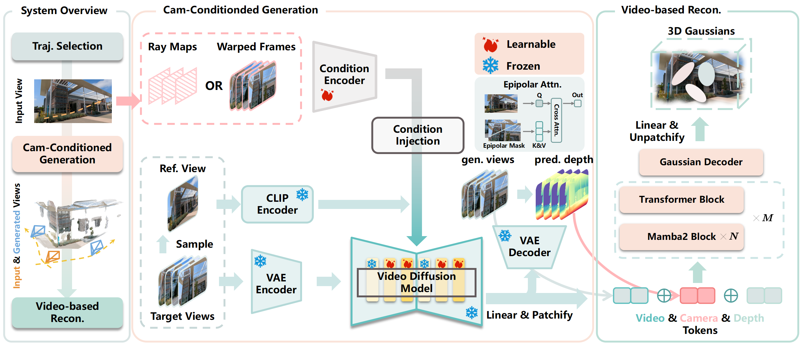

Camera exploration
ICCV 2025
SpatialCrafter
Unleashing the Imagination of Video Diffusion Models for Scene Reconstruction from Limited Observations
1 Zhejiang University 2 Hong Kong University of Science and Technology 3 Zhejiang Lab * Corresponding author
01Single or sparse-view input
02Camera-controlled imagination
03Feed-forward 3D Gaussians
Paper overview
Observe less.
Reconstruct more.
Reconstructing a complete 3D scene from one or a few views is fundamentally ambiguous: large parts of the world are never observed, while sparse geometry provides too little constraint.
SpatialCrafter turns the physical-world knowledge of a video diffusion model into additional, camera-guided observations, then converts the generated sequence into a photorealistic 3D Gaussian scene in one feed-forward pass.
Generative reconstruction
Turn imagined observations into a 3D scene
Sparse-view NVS
Preserve geometry from limited overlap
Method
A generative reconstruction pipeline.
SpatialCrafter couples a camera-conditioned video model with a feed-forward Gaussian decoder, so generation and reconstruction reinforce the same spatial scene.

Scale-aware camera control
A unified scale estimator calibrates trajectories across datasets, while dense ray embeddings provide precise pose conditioning.
Epipolar video generation
Explicit geometric masks guide cross-frame attention, improving 3D consistency under large camera motion.
Latent Gaussian decoding
Monocular depth and video semantics are fused by Transformer and Mamba blocks to directly regress per-pixel Gaussian primitives.
Video results
From imagination to navigable 3D.
Each case follows the full pipeline from generated observations to a reconstructed scene. Play or pause any result by clicking the video.
Outdoor scene
Waterside building
Generated scene
Forest stream
Real capture
Urban utility vehicle
Stylized scene
Illustrated castle
Indoor scene
Detailed office
Indoor scene
Living room
Object scene
Stone bench
Object scene
Sculpture
Object scene
Reflective stone stack
All generated cases
Controlled views across diverse scenes.
Free-camera exploration
Long-range paths in real scenes.
Camera-guided generation extends the observed world along complex paths, including wide outdoor motion and interior traversal.
Long sequence
Temple flyover
Interior
Room traversal
Drone path 01
Campus landscape
Drone path 02
Rooftop orbit
Drone path 03
Pool complex
Drone path 04
Urban courtyard
Drone path 05
Forest architecture
Drone path 06
Extended scene tour
Real scene
Church interior
Real scene
Courtyard sculpture
Real scene
Shop interior
Quantitative results
Strong control and reconstruction from fewer views.
Best controllable-video quality among compared methods.
A 5.90 dB gain over CAT3D in the sparse-view setting.
Outperforms feed-forward baselines when input views barely overlap.
Higher novel-view fidelity than diffusion-based baselines.
Evaluated on
RealEstate10K, ACID, DTU, LLFF, Mip-NeRF360, DL3DV, and Tanks-and-Temples.
Citation
Build on SpatialCrafter.
Accepted to ICCV 2025.
@inproceedings{zhang2025spatialcrafter,
title = {SpatialCrafter: Unleashing the Imagination of Video
Diffusion Models for Scene Reconstruction from Limited Observations},
author = {Zhang, Songchun and Xu, Huiyao and Guo, Sitong and
Xie, Zhongwei and Bao, Hujun and Xu, Weiwei and Zou, Changqing},
booktitle = {Proceedings of the IEEE/CVF International Conference
on Computer Vision (ICCV)},
year = {2025}
}